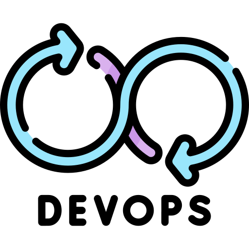
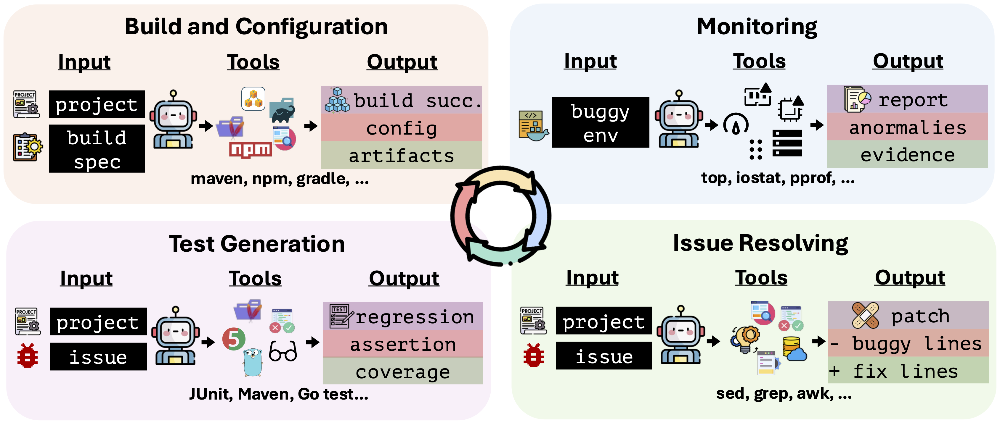

DevOps-GymThe first end-to-end benchmark for evaluating AI agents across the whole DevOps cycle: build and configuration, monitoring, issue resolving, and test generation. DevOps-Gym specifically focuses on long-horizon tool calling and long context reasoning capabilities for agent tasks, featuring 700+ real-world tasks collected from 30+ projects in Java and Go.
| Rank | Agent | Model | Build & Config (%) | Monitoring (%) | Issue Resolving (%) | Test Generation (%) | Overall (%) |
|---|---|---|---|---|---|---|---|
| Loading... | |||||||
The leaderboard shows evaluation results on DevOps-Gym for different agent frameworks and LLMs.
Results are sorted by Overall Accuracy (average of the four stages). The best result for each stage is marked in bold.
• Build & Config: Success rate on build and configuration tasks
• Monitoring: Success rate on monitoring tasks
• Issue Resolving: Success rate on issue resolving tasks
• Test Generation: Success rate on test generation tasks
• Overall: Average accuracy across all four stages, calculated as (Build & Config + Monitoring + Issue Resolving + Test Generation) / 4
DevOps-Gym is the first end-to-end benchmark for evaluating AI agents across the whole DevOps cycle: build and configuration, monitoring, issue resolving, and test generation. It specifically focuses on long-horizon tool calling and long context reasoning capabilities for agent tasks, featuring 700+ real-world tasks collected from 30+ projects in Java and Go, gathered through a semi-automated mechanism with rigorous expert validation.

We evaluate two categories of challenges:
Input: Repository with failing build configuration (repair) or specification for new build setup (implementation);
terminal access with build tools (Maven, Gradle, npm), text utilities, and package managers.
Output: For repair tasks: patch (diff format) fixing build failure;
for implementation tasks: complete configuration files meeting specifications.
Evaluation: Build process executes without errors and built artifacts pass dedicated test cases.
Monitoring tasks require agents to capture runtime execution and system states using command-line tools, and detect performance and resource utilization anomalies. We focus on performance and resource anomalies rather than immediate crashes, as they require careful analysis to uncover. We consider two types:
Input: Containerized environment running an application with bugs; terminal access
(top, free, ps, netstat) with no access to source code, configuration files, or trigger scripts.
Output: Structured diagnostic report: specific issue type (e.g., memory_leak) and supporting
evidence with quantitative metrics (e.g., memory growth rate, affected process ID).
Evaluation: Binary accuracy requiring agents to correctly identify the specific type of anomaly.
Issue resolving requires agents to translate bug descriptions into code fixes, following established methodologies similar to SWE-bench. Agents receive buggy repositories with natural language descriptions and must generate patches that pass fail-to-pass test transitions.
Input: Buggy repository with natural language bug description.
Output: Patch (diff format) that fixes the issue.
Evaluation: Patches must pass fail-to-pass test transitions, ensuring the fix resolves
the described issue and maintains existing functionality.
Test generation requires agents to create regression tests based on bug descriptions to prevent issue recurrence and ensure functionality correctness. This task is more challenging than issue resolving, as it requires reasoning about runtime behavior and how bugs would be triggered during execution.
Input: Bug description and repository context.
Output: Regression test that reproduces the described failure and validates patch correctness.
Evaluation: Generated tests must precisely reproduce the failure described in the issue
and subsequently pass on the patched code.
All models perform poorly in build implementation tasks, especially in migration tasks. Agents struggle with understanding the internal mechanisms of build tools like Maven and goreleaser, as well as their practical usage patterns in real-world projects. This is fundamentally different from fixing a bug in source code, where the context is more self-contained. This result demonstrates that while agents are improving at manipulating source code, they are far from capable of managing the software's build and deployment environment.
Agents perform exceptionally poorly on monitoring tasks, even reporting 0% with some state-of-the-art models. This failure stems from three fundamental challenges: (1) monitoring requires continuous processing of evolving system state information, exhausting context limits quickly; (2) agents struggle to consistently focus on monitoring, becoming distracted by earlier observations and stopping active monitoring; (3) agents exhibit poor baseline discrimination, generating false positives by misinterpreting normal operational variance as anomalies. These monitoring failures reveal that current agents lack the temporal reasoning and sustained attention mechanisms essential for dynamic system observation.
The resolve rate drops significantly when moving from Python repositories (SWE-Bench) to Java and Go. Using the same agent and model combination (OpenHands + Claude-4-Sonnet), the resolving rate achieves 70.4% on SWE-Bench-Verified, yet drops dramatically to 23.87% on our benchmark. This indicates that existing LLMs struggle with the cross-language capability gap, likely due to the dominance of Python code in training data. Complex compilation processes, dependency management, and environment configuration in Java and Go pose major challenges that even newer models fail to overcome.
When using the exact same set of issues for evaluation, the accuracy of generating high-quality tests is notably lower than the issue resolving rate. Test generation requires agents to not only have a static understanding of the repository but also dynamic analysis capabilities to reason about how bugs would be triggered during execution. The agent must also reason about how the bug might be resolved, so that generated tests can both reproduce the failure and validate the patch correctness. In contrast, generating a patch can sometimes be accomplished through more straightforward, static code analysis. These results suggest that while agents are becoming proficient at predicting coding patterns, reasoning about runtime behavior remains significantly more challenging.
top) instead of continuous monitoring (e.g., watch -n 1).If you use this work in your research, please cite the following:
@misc{devopsgym2025,
title={DevOps-Gym: Benchmarking AI Agents in Software DevOps Cycle},
author={[Authors]},
year={2025},
eprint={[arXiv ID]},
archivePrefix={arXiv},
primaryClass={cs.SE},
url={[arXiv URL]},
}Please check out more of our works: Frontier AI's Impact on the Cybersecurity Landscape , a comprehensive analysis of how frontier AI is reshaping cybersecurity and how we should respond. Also see our Frontier AI Cybersecurity Observatory , a live leaderboard tracking AI's cybersecurity capabilities across attack and defense tasks.